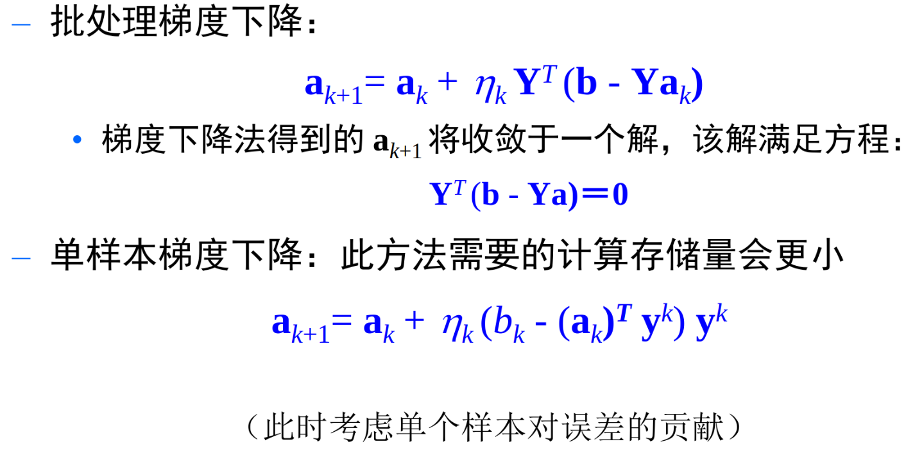

线性判别函数
判别模型
判别函数基本技术路线
- 假定判别函数的形式已知，采用样本来估计判别函数的参数。（学习问题）
- 对于给定的新样本，用判别函数判定x属于那一类（推理、预测问题）
线性判别函数
这个就是线性分类器，可以将 \(w_0\) 也放入权重向量 \(W^T\) 中。
g(x) = 0 ，定义了一个决策面，其实就是与权重向量垂直的一个面。
g(x) = 0 是一个超平面。
任何向量样本x都可以被分解为决策面向量和与权重向量平行的向量，即：
\(x = x_p + r \frac{w}{||w||}\),\(r = \frac{g(x)}{||w||}\)
其中 \(x_p\) 是x在超平面中的投影，r为x到决策面的距离，正侧大于0，反之小于0。
多类情形
- 一对多：逐一将每个类与所有的其它类进行配对，构造c(类别数）个两类分类器。若只有一个预测正，那么对应类别即为分类结果，否则存在不确定区域。
- 一对一：两两配对，构造 \(\frac{c(c-1)}{2}\) 个两类分类器。用投票法得到预测结果。
- 多对多：ECOC,层次分类。
可以考虑最大判别函数决策
\(g_i(x) = max_j g_j(x) \Rightarrow x \in w_i\)
线性决策面是凸的，且所有的决策区域都是单联通的，便于分析。
但是，凸决策区域限制分类器的灵活性和精度，单联通区域不利于复杂数据的分布。
广义线性判别函数
将原先的数据点x通过非线性映射，将其映射为新的数据点y。在新的特征空间内应用线性判别函数。
二次判别函数
\(y_i(x) = x_i x_{j}\)
然后对y进行线性判别函数，其实就是对x进行二次函数的判别了。
这里还可以进行升维，y的维度是所有二次项(x_ix_j)和一次项的和。
这里我们可以记 y(x) 为变换函数。
广义判别函数对于y来说是线性的，对于x来说是非线性的。
新空间维数足够高，可以g(x)逼近任何函数
感知准则函数
可以先对样本进行规范化增广：先将所有样本写成齐次增广形式，然后将属于另一个分类\(w_2\)的样本y变为 \(-y\)。这样就可统一 \(a^ty > 0\) 。
在线性可分的情况下，将 \(a^Ty_i > 0\) 的权向量a称为解向量。
对于多个样本，每个样本其实会对 \(a\) 产生一个限制（y的垂直平面上）。那么最终的解向量其实就是这个n个样本产生 的n个超平面的交集。
可行的解向量不是唯一的，有无穷多个，所以越靠近区域中间越好（经验）
所以引入 \(b, a^T y \ge b > 0\)，这样解更加可靠，推广性更强，并且防止算法收敛到解区的边界。
感知准则函数
\(J_p(a) = \sum_{y \in Y} (-a^T y)\)
其中Y为错分样本集合。当y被错分时，\(a^T y \ge 0\)，则\(-a^T y \ge 0\)。
所以目标就是最小化 \(J_p(a)\)。感知器思想。Perceptron
梯度下降法
\(\frac{\partial J_p(a)}{\partial a} = - \sum_{y \in Y} y\)
所以更新准则为\(a_{k+1} = a_k - \eta_k \frac{\partial J_p(a)}{\partial a} = a_k + \eta_k \sum_{y \in Y} y\)
其中 \(a_{k+1}\) 是当前迭代结果，\(a_k\) 是前一次迭代结果，\(\eta_k\) 是步长因子、更新动力因子、学习率。
这样做，就是可变批量处理感知器算法。也可以每次只处理一个错分样本，考虑每次\(\eta_k = 1\)。
几何解释，错分样本是位于决策面的负侧，那么样本的和也在该侧。更新之后会向错分样本之和靠近，朝着有利的方向移动
在样本线性可分的情况下，固定增量单样本权向量修正方法收敛，并可得到一个可行解。
松弛准则
其实可以有多种准则可以用于感知函数的学习
学习准则
- 线性准则: \(J_p(a) = \sum_{y \in Y} (-a^T y)\)
- 平方准则: \(J_q(a) = \sum_{y \in Y} (a^T y) ^2\)
- 松弛准则: \(J_r(a) = \frac{1}{2} \sum_{y \in Y} \frac{(a^T y - b)^2}{||y||^2}\)，注意这里的Y为 \(a^T y \le b 的样本集合\)
松弛准则，避免了线性准则分段线性、梯度不连续的缺点，避免了平方准则目标函数过于平滑、收敛速度很慢的缺点。
梯度 \(\frac{\partial J_r(a)}{\partial a} = - \sum_{y \in Y} \frac{a^T y - b}{||y||^2} y\)
几何解释 若\(\eta = 1\)，则 \(a_k\) 直接移动到该超平面，错分被引起的压力 \(a^T y^k \le b\) 被释放，所以称为松弛。
最小平方误差
MSE 准则。
之前都是认为该判定函数大于0即可，不要去具体的值。
这里我们直接给一个确定的值，即 \(a^T y_i = b_i > 0\)
那么按照行排列，即可写成矩阵乘向量形式
然后其实就是最小二乘解，最小化误差 \(||e||^2 = ||Ya - b||\)
其实转化为求解 \(Y^T Ya = Y^T b \Rightarrow a = (Y^T Y) ^{-1} Y^T b\)
也可以使用梯度下降法

最小平方准则方法可能并不收敛于可分超平面，即使该平面是存在的。
MSE方法的本质是最小化样本至超平面的距离的平方和
Ho-Kashyap
我们可以将b也设为参数，即为
\(J_s(a,b) = ||Ya-b||^2,b > 0\)
同样的，进行梯度下降。具体看ppt。
多类线性判别
- MSE 多类扩展，其实就是采用c个两类分类器组合
- 感知器准则扩展方法，一次性学出c个权重向量
- Kelser 构造，将所有的权重向量a拼成长向量，然后构造新样本。